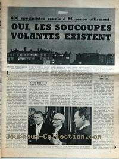

À Ririe (Idaho), WillBegay et ClydeSoccie (tous les 2 d'une vingtaine d'année) rapportent
qu'un objet a atterri au sommet de leur voiture, les forçant à s'arrêter. 2 nains leur auraient parlé, mais sans se
faire comprendre, puis l'objet serait parti FSR 68, 1 < Vallée 1969, 894.
A San Jeronimo (Argentine), CarlosSpini et 1 autre homme examinent des vaches lorsqu'ils voient un objet circulaire
lumineux bleu atterrir non loin d'eux. Ils s'approchent et l'objet décolle Vallée 1969, 895.
À Fordingbridge (Grande-Bretagne), le conducteur de camion Karl
Farlow dit à la police qu'alors que ses phares et sa radio s'étaient arrêtés, mais
que son moteur diesel ait continué à fonctionner, il a vu un objet en forme d'œuf de 3 m de long à 15 m de distance.
Quelques moments plus tard, un Jaguar blanche venant dans la direction opposée s'arrête également. L'objet, émettant
une lumière verte et montrant un dôme blanchâtre sous sa surface inférieure, stationna entre les 2 véhicules pendant
2 mn et partit à grande vitesse FSR 67, 6; 68, 3 < Vallée 1969, 896.
ou Sur la route A 338 reliant les villages de Sopley et d'Avon, dans le
Hampshire (Angleterre), Carl Farlow conduit un camion, quand
ses phares s'éteignent. Il voit alors un grand appareil magenta et blanc traverser sa route puis disparaître. En
face de lui, un autre témoin venant en sens contraire est également arrêté et sa passagère est en état de choc. La
route semble avoir fondu. Tous 2 téléphonent à la police, qui arrive et les emène pour les interroger. Ils sont
également interrogés par un officiel du ministère de la Défense.
Farlow retourne à son camion. Un bulldozer nivèle la route, on repeint
la cabine téléphonique et d'autres individus semblent examiner l'endroit à l'aide d'instruments. Environ une semaine
plus tard, sur la même route, Farlow constatera que quelque 70 m de ce tronçon de route ont eu droit à un nouveau
revêtement.
Lancement de la mission Apollo 4 à l'aide d'une fusée
Saturn V.
Felix Zigel, vice-président du Comité Stolyarof montre à la télévision des dessins d'ovnis
observés dans le Caucase et des photos d'engins volants inconnus et déclare que les objets volants non-identifiés
sont un sujet très sérieux qui doit être étudié complètement. Il réclame alors l'aide, sous forme de
témoignages, de tous les citoyens soviétiques pour cette étude qui constitue un véritable défi à la science.
Les correspondants de presse étrangers n'en croient pas leurs oreilles. Ils ignorent que les autorités ont refusé de
transmettre l'énorme masse de documents top-secrets sur les ovnis au général Stolyarov parce que c'était trop
important pour lui.
À Barinas (Vénézuela), OrlandoGonzales et 2 autres personnes voient un objet ovale de 1,5 m de haut, restant au milieu d'une
autoroute à 80 m de distance. Il part d'un coup vers le haut APRO Nov., 67 < Vallée 1969, 897.
Noir et Blancn° 1185 du 16 novembre, indiquant dans un article : 400 spécialistes réunis à
Mayence affirment : Oui, les soucoupes volantes existent

À Storrington (Grande-Bretagne), Melle Quick
et 1 autre femme voient une lumière clignotante et un objet luisant d'un rouge profond au niveau du sol, avec
une figure sombre, légèrement plus grande qu'un homme normal, s'en approchant. L'objet disparaît soudainement
FSR 68, 2 < Vallée 1969, 898.
À Yerecoin (Australie) le gestionnaire de ferme Alan Pool (43 ans), voit un objet de 6 m de diamètre et 1,5 m de haut, avec des fenêtres
rondes et carrées, atterrir dans un champ avec un bruit de "pleurnicherie". Il décolle et disparaît, ne laissant
aucune trace FSR 68, 1 < Vallée 1969, 899.
A Rio de Janeiro (Brésil) le technicien UgoBattaglia (39 ans) et 1 garçon entendent un son fort et voient un objet brillant, métallique,
en forme de disque descendre, toucher un arbre et stationner, avec 3 grands hommes en combinaisons blanches marcher
autour. Le garçon souffrira par la suite de maux de tête sévères. Traces APRO Nov., 67 < Vallée 1969, 900.
À Yarmouth (Canada), PercyMcBride
voit 1 phénomène clignotant, de la taille d'un wagon, avec 2 antennes, arriver de l'Est et atterrir dans les
bois pendant 15 mn. Il fait un son cliquetant et un bruit semblable à 6 récepteurs radio positionnés sur des
stations différentes. Il a une protubérance carrée, comme une boîte soutenue par un tube en dessous APRO Jan., 68 < Vallée 1969, 901.